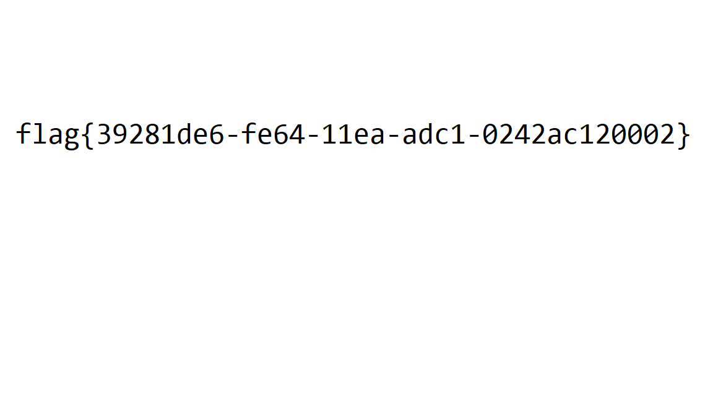
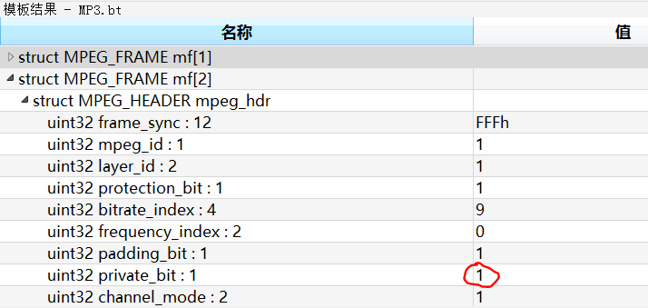

175 Check
下载得到png格式文件，zsteg一把梭的过程中发现了可疑内容：
root@kali:~/Desktop# zsteg -a check.png
b1,rgb,lsb,xy .. text: "flag{h0w_4bouT_enc0de_4nd_pnG}m"
很显然是HTML实体编码，转个码：
flag{h0w_4bouT_enc0de_4nd_pnG}
flag：flag{h0w_4bouT_enc0de_4nd_pnG}
176 fakezip
下载得到加密的zip格式压缩包，先尝试未加密，ZIpCenOp一把梭：
D:\CTFToolkit-v1.1.0\暴力破解\ZipCenOp>java -jar ZipCenOp.jar r 0cb6f418-26ab-40ec-86db-ec7134b27e67.zip
解压得到flag.png：

flag：flag{39281de6-fe64-11ea-adc1-0242ac120002}
177 nice_bgm
下载得到mp3格式文件。波形/频谱、MP3Stego等方式试了一遍，都没有结果，最后用010editor打开看一下每个Frame的Private Bit：

前几个Frame的Private Bit确实有1又有0，尝试把这些bit提取出来。
注意到每个Frame的大小是不一样的：

因此不能直接用循环切片方式读取，需要对下一个Frame的位置进行判断。脚本：
import re
d = open('C:/Users/Administrator/Desktop/1.mp3', 'rb').read()[0x399D0: ]
res = ''
for i in range(5911):
private_bit = d[2] & 1
res += str(private_bit)
if d[0x1A1: 0x1A3] == b'\xFF\xFB':
d = d[0x1A1: ]
elif d[0x1A2: 0x1A4] == b'\xFF\xFB':
d = d[0x1A2: ]
print(bytes([int(i, 2) for i in re.findall(r'.{8}', res)]))
flag：flag{0k4_YOu_Seem_s0_cl3ver_t0_find_f1ag!}
178 Misc文件类型
下载得到txt格式文件，内容：
3436455341425F554573444242514141
41414941416C64434658714F7737634B
4141414143594141414149414141415A
6D78685A7935306548524C79306C4D72
7A5A49536B303253457778546B6B304D
6A5130546A593353445531534573784E
544D3054374A494E552B7A7241554155
45734241685141464141414141674143
56304956656F374474776F414141414A
674141414167414A4141414141414141
414167414141414141414141475A7359
57637564486830436741674141414141
41414241426741477845666B39697132
41456245522B54324B725941514A462B
34725971746742554573464267414141
41414241414541576741414145344141
4141414141
十六进制转码转一下：
46ESAB_UEsDBBQAAAAIAAldCFXqOw7cKAAAACYAAAAIAAAAZmxhZy50eHRLy0lMrzZISk02SEwxTkk0MjQ0TjY3SDU1SEsxNTM0T7JINU+zrAUAUEsBAhQAFAAAAAgACV0IVeo7DtwoAAAAJgAAAAgAJAAAAAAAAAAgAAAAAAAAAGZsYWcudHh0CgAgAAAAAAABABgAGxEfk9iq2AEbER+T2KrYAQJF+4rYqtgBUEsFBgAAAAABAAEAWgAAAE4AAAAAAA
首先可以看到开头有个反过来的BASE64，那么把后面的部分base64解码一下：
import base64
s = 'UEsDBBQAAAAIAAldCFXqOw7cKAAAACYAAAAIAAAAZmxhZy50eHRLy0lMrzZISk02SEwxTkk0MjQ0TjY3SDU1SEsxNTM0T7JINU+zrAUAUEsBAhQAFAAAAAgACV0IVeo7DtwoAAAAJgAAAAgAJAAAAAAAAAAgAAAAAAAAAGZsYWcudHh0CgAgAAAAAAABABgAGxEfk9iq2AEbER+T2KrYAQJF+4rYqtgBUEsFBgAAAAABAAEAWgAAAE4AAAAAAA'
with open('C:/Users/Administrator/Desktop/2', 'wb') as f:
f.write(base64.b64decode(s + '=' * (4 - len(s) % 4)))

明显是个zip格式压缩包，直接解压拿到flag。
flag：flag{0bec0ad3da2113c70e50fd5617b8e7f9}
179 Time_losing
题目：2033-05-18 11:33:20似乎是个好时间。
下载得到zip格式文件，打开看看：

哇全是txt，但是大部分都是0字节，有内容的那几个也不包含flag。
注意到所有文件的修改时间都在2033年，而且如果按照文件名排列文件，那么修改时间是乱序的。结合题目提示也涉及了时间，那么这个修改时间肯定有问题。7-zip打开，按修改时间排序，看一下最迟一个46.txt的修改时间：

是2033-05-18 11:35:25，和2033-05-18 11:33:20正好相差125秒。同样的，看一下最早的1.txt：

和2033-05-18 11:33:20相差72秒，都在ASCII可打印字符编码范围内。
解压一下，然后用脚本来读修改时间，然后转码：
import os, time
path = 'C:/Users/Administrator/Desktop/stego/'
start = time.mktime(time.strptime('2033-05-18 11:33:20', '%Y-%m-%d %H:%M:%S'))
print(bytes([int(os.path.getmtime(f'{path}{i}.txt') - start) for i in range(47)]))
flag：XMan{seems_to_be_related_to_the_special_guests}
180 misc_xor
下载得到txt格式文件：
cidb~0f<f==0f634014`5g734c0=g34ag=f`fx
既然题目叫xor那就是异或加密，CyberChef秒了：

flag：flag{5c9c885c361541e0b261f58b61db8cec}